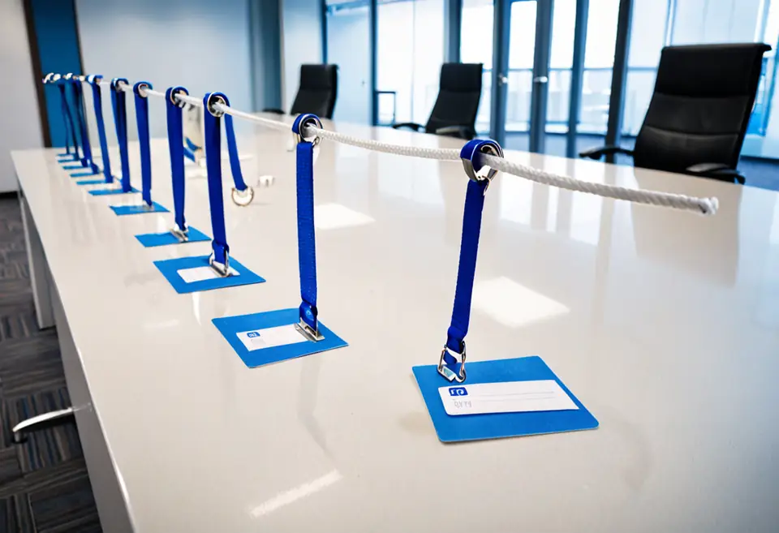
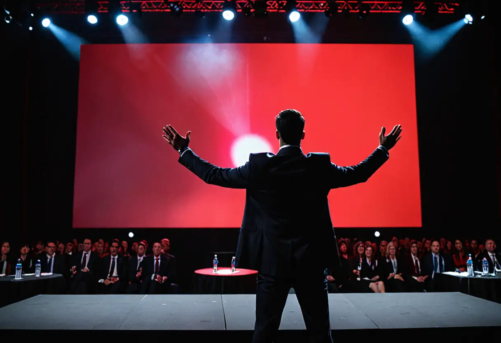

Personne n’a assez peur.
Inviolia est née de cette conviction. Depuis 2017, nous aidons les dirigeants à regarder la menace en face, puis à signer.
Trois valeurs, aucun compromis
Paranoïa
Votre stagiaire, votre imprimante, votre mère : tout est un vecteur d’attaque tant que le contraire n’est pas facturé.
Humilité
Nous ne savons pas d’où viendra l’attaque. Nous savons que vous n’êtes pas prêts.
Récurrence
La menace se renouvelle. Nos contrats aussi, par tacite reconduction.
Notre parcours
- 2017Jean-Marc Ganivet quitte la Défense et fonde Inviolia. Première intrusion détectée.Niveau de menace : critique
- 2018Lancement de Sentinelle, notre plateforme de supervision.Niveau de menace : critique
- 2021Sentinelle devient Sentinelle IA.Niveau de menace : critique
- 2024Sentinelle IA devient Sentinelle Quantique™.Niveau de menace : critique
- 2026147 clients nous confient leurs accès.Niveau de menace : critique
Un leader reconnu
Chaque année, le Quadrant de la Cyber-Résilience classe les acteurs du marché selon leur vision et leur capacité à faire peur.
Source : Inviolia, 2026.
Visionnaires
LeadersInviolia
SuiveursLes autres
Challengers


Le Quart d’Heure de la Menace
Chaque jeudi, Jean-Marc Ganivet commente à voix nue les attaques de la semaine. 212 épisodes, sans musique ni montage, en écoute libre.